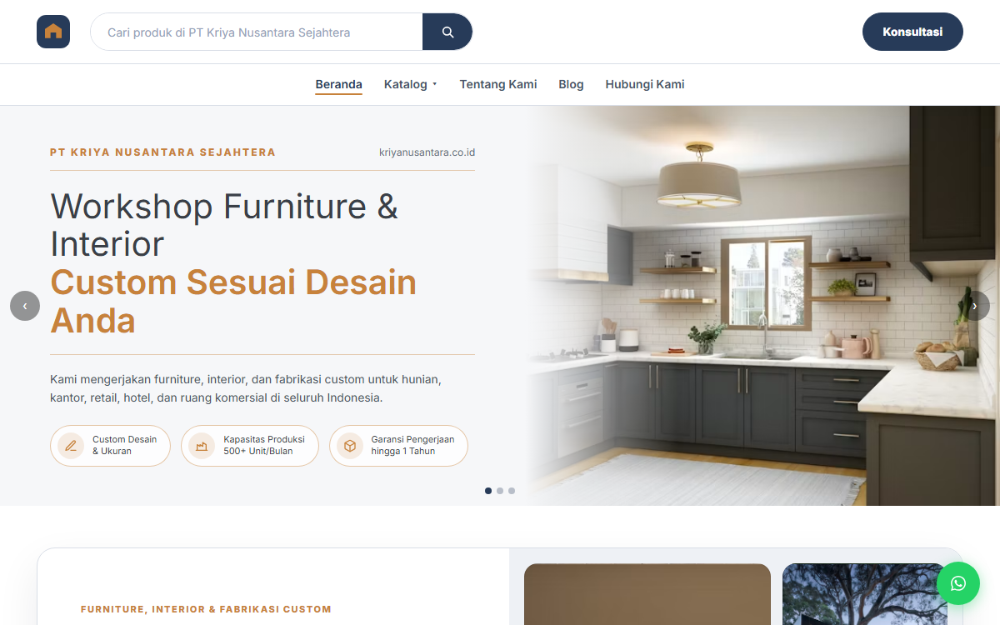
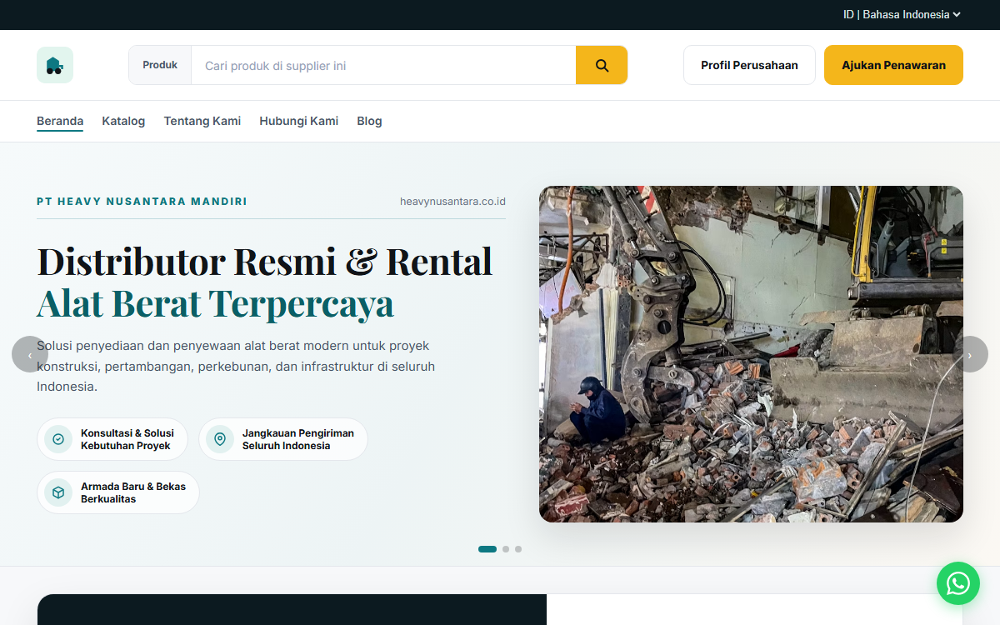

Company Profile & Catalog Template
Commercial template designed for two business types — rental and showcase. One shared structure, reskinned into two full dummy demos to show how fast the same template can become a different brand.
- Year
- 2024
- Role
- Frontend Developer
- Type
- Commercial Template
- Tools
- HTML, CSS, JavaScript


One template, two industries
Built to sell at a previous company: a reusable company-profile-and-catalog template with a hero carousel, a stats bar, a guided process, a priced product catalog, portfolio references, and a floating WhatsApp CTA — deployed as two complete dummy demos so a client could see their industry in it before committing.
One build, resold twice
Rebuilding a company-profile site from scratch for every B2B client wastes time. The brief was a single template flexible enough to fit two very different catalogs — heavy machinery and custom furniture — without touching its structure.
B2B sellers who quote by request
Distributors, rental businesses, and custom fabrication workshops — companies whose customers browse a catalog, then reach out by WhatsApp or a form to get a quote, rather than checking out online.
How the template behaves
Three flows carry the template's logic, shown here with the real category names, prices, and stats from each demo.
Browse & Filter Catalog
Products filter by category, brand, and price range on the rental demo — Excavator, Bulldozer, Wheel Loader & Dump Truck, Mobile Crane — each card listing a unit price and a “Minta Penawaran” button. The showcase demo reuses the exact same filter-and-grid component for Furniture Custom, Interior & Kitchen Set, and Booth & Signage.